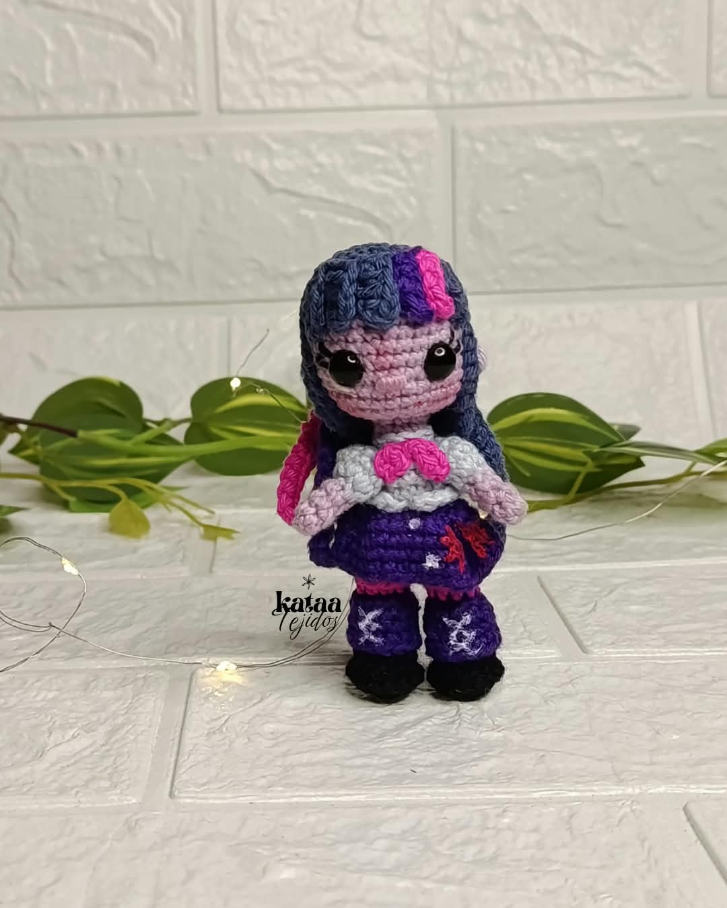
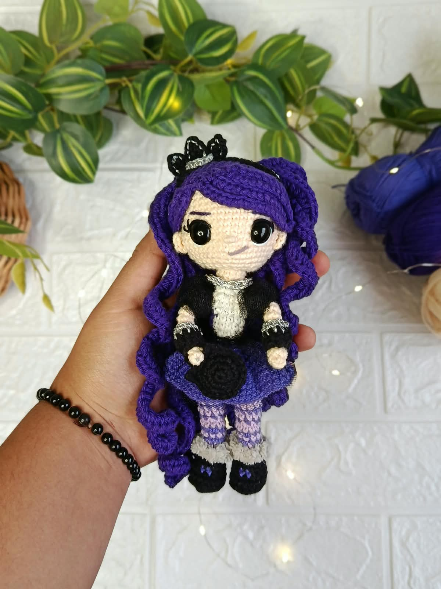
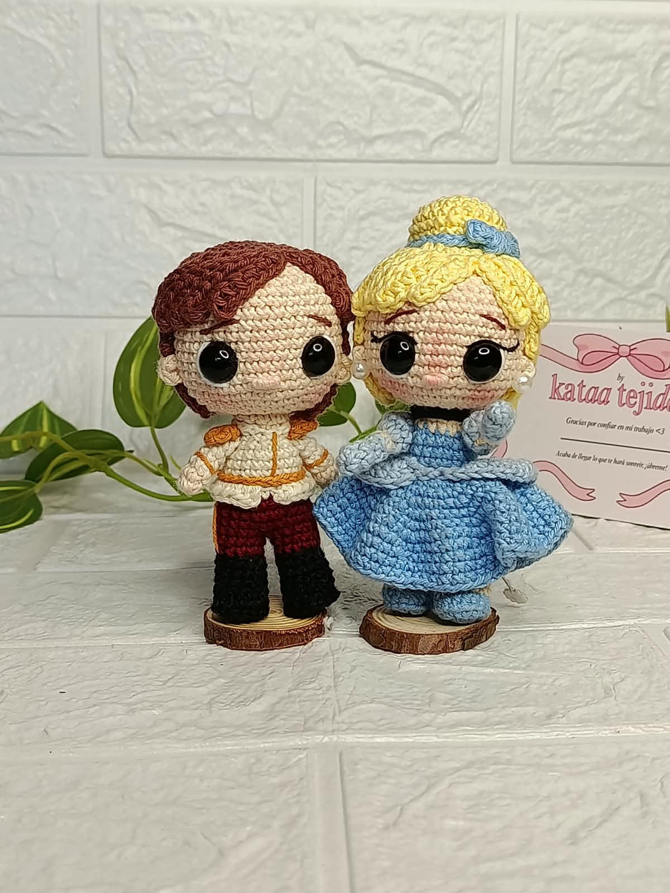

Twilight mini
Cree este mini proyecto como agradecimiento especial por alcanzar los 700 seguidores.
Ver Proyecto →Una muestra de mis creaciones de amigurumi y proyectos destacados en redes sociales.

Cree este mini proyecto como agradecimiento especial por alcanzar los 700 seguidores.
Ver Proyecto →
Este es el primer proyecto realizado e ideado completamente desde cero por mí.
Ver Proyecto →
Este ha sido mi último proyecto y la primera pareja realizada desde cero por mí.
Ver Proyecto →